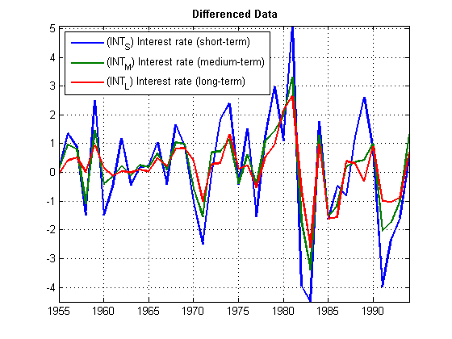

Demo 1: Cointegration
Demo from the April 14, 2011 webinar titled "Cointegration and Pairs Trading with Econometrics Toolbox."
See also Demo 2
Contents
Copyright 2011, The MathWorks, Inc. All rights reserved.
clear; close all; clc
Interest Rate Data
load Data_Canada Y = Data(:,3:end); figure plot(dates,Y,'LineWidth',2) xlabel('Year') ylabel('Percent') names = series(3:end); legend(names,'location','NW') title('{\bf Canadian Interest Rates, 1954-1994}') axis tight grid on
Pretest for the Order of Integration
y1 = Y(:,1); % Short-term rate % Levels data: fprintf('=== Test y1 for a unit root ===\n\n') [h1,pVal1] = adftest(y1,'model','ARD') % Left-tail probability fprintf('\n=== Test y1 for stationarity ===\n\n') [h0,pVal0] = kpsstest(y1,'trend',false) % Right-tail probability % Differenced data: fprintf('\n=== Test (1-L)y1 for a unit root ===\n\n') [h1D,pVal1D] = adftest(diff(y1),'model','ARD') % Left-tail probability fprintf('\n=== Test (1-L)y1 for stationarity ===\n\n') [h0D,pVal0D] = kpsstest(diff(y1),'trend',false) % Right-tail probability figure plot(dates(2:end),diff(Y),'LineWidth',2) names = series(3:end); legend(names,'location','NW') title('{\bf Differenced Data}') axis tight grid on
=== Test y1 for a unit root ===
h1 =
0
pVal1 =
0.2867
=== Test y1 for stationarity ===
Warning: Test statistic #1 above tabulated critical values:
minimum p-value = 0.010 reported.
h0 =
1
pVal0 =
0.0100
=== Test (1-L)y1 for a unit root ===
Warning: Test statistic #1 below tabulated critical values:
minimum p-value = 0.001 reported.
h1D =
1
pVal1D =
1.0000e-003
=== Test (1-L)y1 for stationarity ===
Warning: Test statistic #1 below tabulated critical values:
maximum p-value = 0.100 reported.
h0D =
0
pVal0D =
0.1000
 Engle-Granger Test for Cointegration
% Run the test with both "tau" (t1) and "z" (t2) statistics: fprintf('\n=== Engle-Granger tests for cointegration ===\n\n') [hEG,pValEG] = egcitest(Y,'test',{'t1','t2'})
=== Engle-Granger tests for cointegration ===
hEG =
0 1
pValEG =
0.0526 0.0202
Identify the Cointegrating Relation
% Return the results of the cointegrating regression: [~,~,~,~,reg] = egcitest(Y,'test','t2'); c0 = reg.coeff(1); b = reg.coeff(2:3); figure C = get(gca,'ColorOrder'); set(gca,'NextPlot','ReplaceChildren','ColorOrder',circshift(C,3)) plot(dates,Y*[1;-b]-c0,'LineWidth',2) title('{\bf Cointegrating Relation}') axis tight grid on
VEC Model Estimation, Simulation, Forecasting
% See Documentation: % % Econometrics Toolbox\User's Guide % \Mulivariate Time Series Models % \Cointegration and Error Correction % \Identifying Single Cointegrating Relations % \Estimating VEC Model Parameters
Multiple Cointegrating Relations
% Permutations of the data variables: P0 = perms([1 2 3]); [~,idx] = unique(P0(:,1)); % Rows of P0 with unique regressand y1 P = P0(idx,:); % Unique regressions numPerms = size(P,1); % Preallocate: T0 = size(Y,1); HEG = zeros(1,numPerms); PValEG = zeros(1,numPerms); CIR = zeros(T0,numPerms); % Run all tests: for i = 1:numPerms YPerm = Y(:,P(i,:)); [h,pVal,~,~,reg] = egcitest(YPerm,'test','t2'); HEG(i) = h; PValEG(i) = pVal; c0i = reg.coeff(1); bi = reg.coeff(2:3); CIR(:,i) = YPerm*[1;-bi]-c0i; end fprintf('\n=== Different Engle-Granger tests, same data ===\n\n') HEG,PValEG % Plot the cointegrating relations: figure C = get(gca,'ColorOrder'); set(gca,'NextPlot','ReplaceChildren','ColorOrder',circshift(C,3)) plot(dates,CIR,'LineWidth',2) title('{\bf Multiple Cointegrating Relations}') legend(strcat({'Cointegrating relation '}, ... num2str((1:numPerms)')),'location','NW'); axis tight grid on
=== Different Engle-Granger tests, same data ===
HEG =
1 1 0
PValEG =
0.0202 0.0290 0.0625
Johansen Test for Cointegration
fprintf('\n=== Johansen tests for cointegration ===\n') [hJ,pValJ] = jcitest(Y,'model','H1','lags',1:2);
=== Johansen tests for cointegration === ************************ Results Summary (Test 1) Data: Y Effective sample size: 39 Model: H1 Lags: 1 Statistic: trace Significance level: 0.05 r h stat cValue pValue eigVal ======================================== 0 1 35.3442 29.7976 0.0104 0.3979 1 1 15.5568 15.4948 0.0490 0.2757 2 0 2.9796 3.8415 0.0843 0.0736 ************************ Results Summary (Test 2) Data: Y Effective sample size: 38 Model: H1 Lags: 2 Statistic: trace Significance level: 0.05 r h stat cValue pValue eigVal ======================================== 0 0 25.8188 29.7976 0.1346 0.2839 1 0 13.1267 15.4948 0.1109 0.2377 2 0 2.8108 3.8415 0.0937 0.0713
VEC Model Estimation
[~,~,~,~,mles] = jcitest(Y,'model','H1','lags',2,'display','params'); B = mles.r2.paramVals.B % Cointegrating relations with rank = 2 restriction
****************************
Parameter Estimates (Test 1)
r = 0
------
B1 =
-0.1848 0.5704 -0.3273
0.0305 0.3143 -0.3448
0.0964 0.1485 -0.1406
B2 =
-0.6046 1.6615 -1.3922
-0.1729 0.4501 -0.4796
-0.1631 0.5759 -0.5231
c1 =
0.1420
0.1517
0.1508
r = 1
------
A =
-0.6259
-0.2261
-0.0222
B =
0.7081
1.6282
-2.4581
B1 =
0.0579 1.0824 -0.8718
0.1182 0.4993 -0.5415
0.1050 0.1667 -0.1600
B2 =
-0.5462 2.2436 -1.7723
-0.1518 0.6605 -0.6169
-0.1610 0.5966 -0.5366
c0 =
2.2351
c1 =
-0.0366
0.0872
0.1444
r = 2
------
A =
-0.6259 0.1379
-0.2261 -0.0480
-0.0222 0.0137
B =
0.7081 -2.4407
1.6282 6.2883
-2.4581 -3.5321
B1 =
0.2438 0.6395 -0.6729
0.0535 0.6533 -0.6107
0.1234 0.1228 -0.1403
B2 =
-0.3857 1.7970 -1.4915
-0.2076 0.8158 -0.7146
-0.1451 0.5524 -0.5089
c0 =
2.0901
-3.0289
c1 =
-0.0104
0.0137
0.1528
B =
0.7081 -2.4407
1.6282 6.2883
-2.4581 -3.5321
Testing Cointegrating Vectors
fprintf('\n=== Test y1, y2,y3 for stationarity ===\n\n') [h0J,pVal0J] = jcontest(Y,1,'BVec',{[1 0 0]',[0 1 0]',[0 0 1]'})
=== Test y1, y2,y3 for stationarity ===
h0J =
1 1 1
pVal0J =
1.0e-003 *
0.3368 0.1758 0.1310